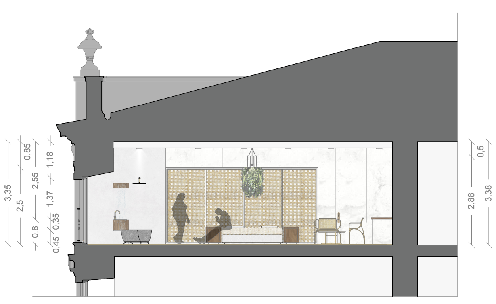
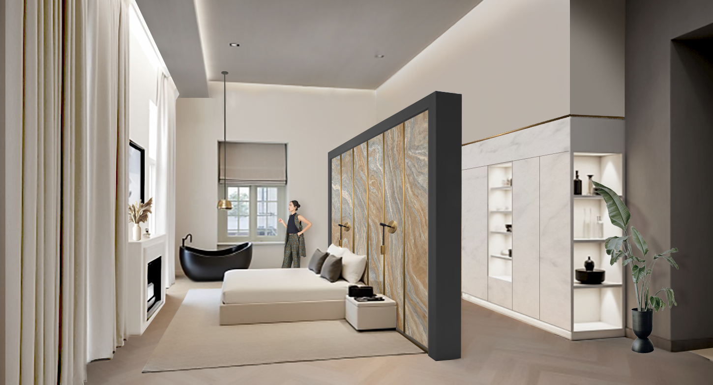
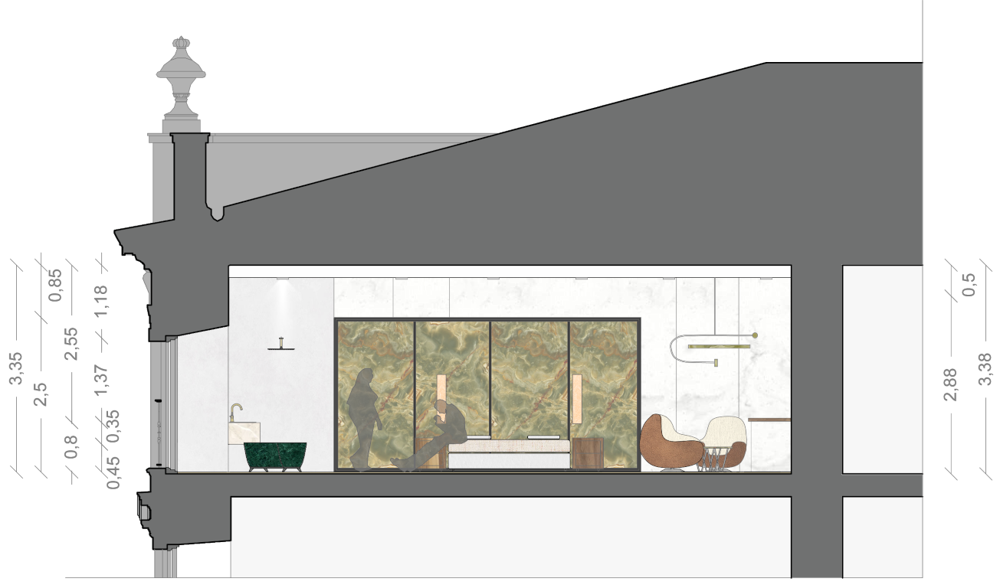
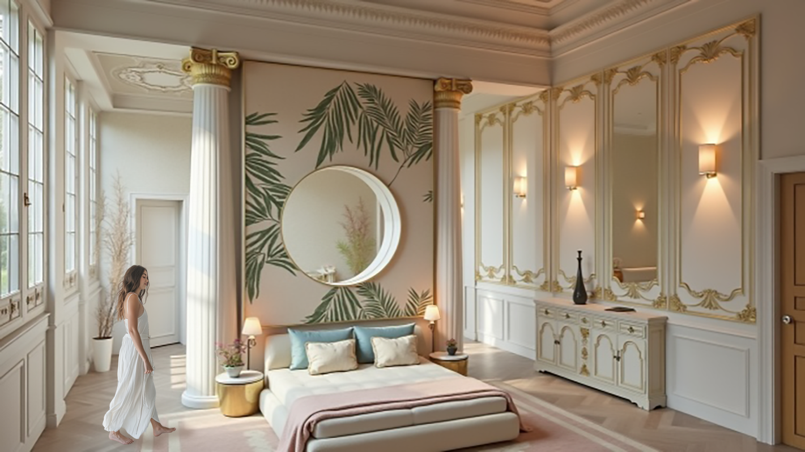
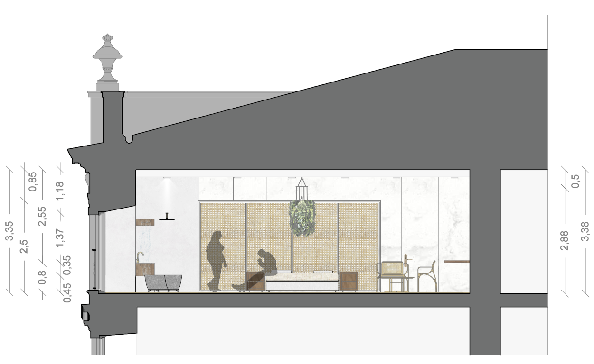
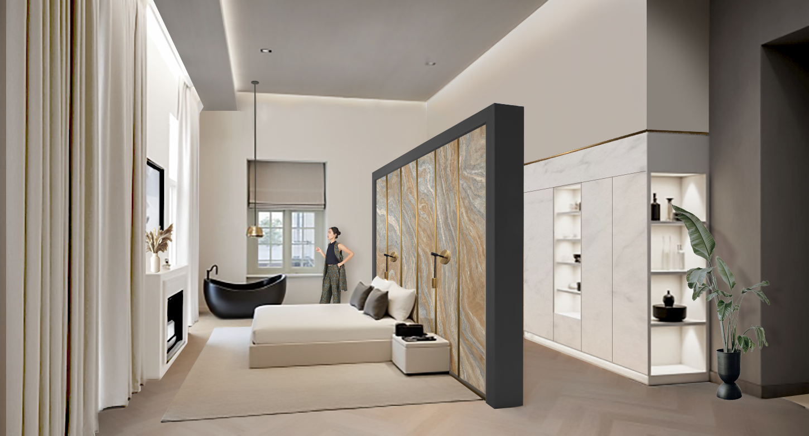
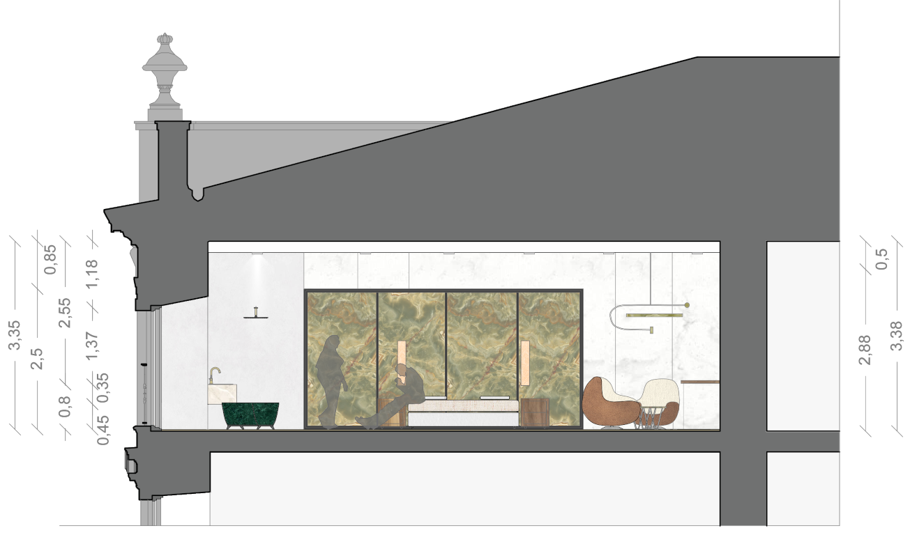
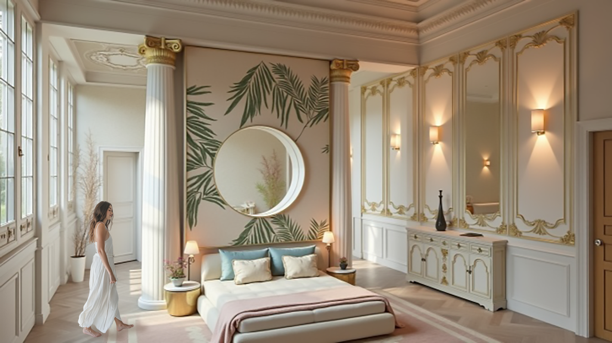

SCALA NATURAE
Master’s final project focused on transforming the Infante Don Luis Palace in Madrid into a luxury hotel. The concept draws inspiration from Luis' fascination with science and nature, expressing the human–nature relationship through the treatment of natural resources and their manifestations, such as materials, lighting, and atmosphere.
 






